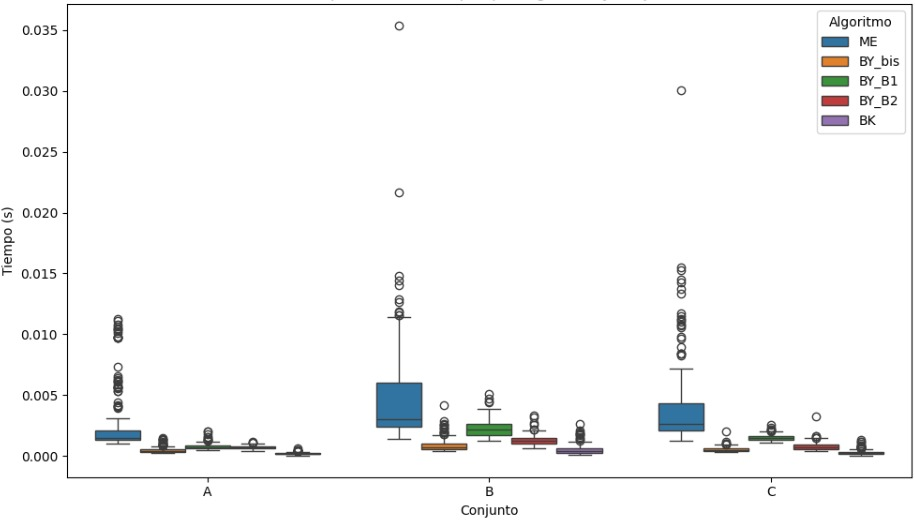
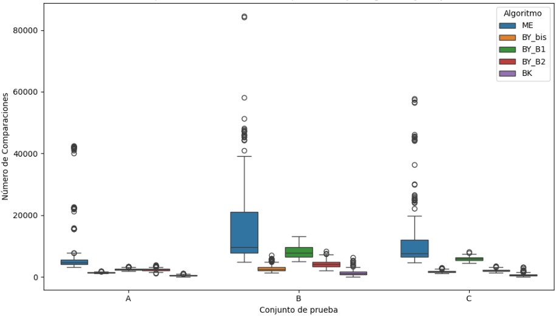
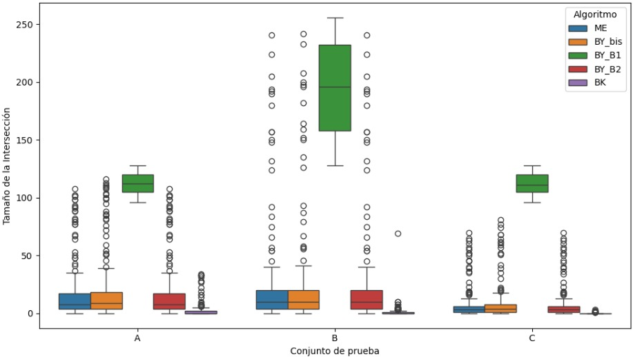

Proyecto 5
5 Reporte escrito. Experimentos y análisis de algoritmos de intersección de conjuntos.
1. Introducción
El trabajo con grandes volúmenes de datos requiere encontrar formas eficientes de realizar operaciones básicas como la intersección de listas. Esta tarea, que consiste en identificar los elementos comunes entre varias listas ordenadas, resulta fundamental en sistemas como los motores de búsqueda, el filtrado de datos o el procesamiento de información en general. En este proyecto se propuso implementar y comparar varios algoritmos de intersección con el objetivo de analizar sus diferencias, ventajas y limitaciones en distintos escenarios.
Los algoritmos seleccionados para este análisis fueron Melding (ME), Baeza-Yates (BY) y Barbay & Kenyon (BK). Cada uno de ellos aborda el problema desde una estrategia distinta, lo que permite observar cómo se comportan las listas.
El algoritmo Melding prioriza las listas más pequeñas para cruzarlas primero. Esta estrategia permite reducir el tamaño de las intersecciones parciales desde el inicio, acelerando el proceso cuando algunas listas tienen pocos elementos que filtran rápidamente el resultado (Barbay et al., 2009).
El algoritmo Baeza-Yates parte de una lista base y busca sus elementos en las demás listas utilizando distintas técnicas. En este estudio se emplearon tres variantes: búsqueda binaria, búsqueda no acotada B1 (con saltos exponenciales y luego binaria) y la versión B2 (que mejora los saltos iniciales). Estas variantes permiten optimizar el número de comparaciones en función del tamaño relativo de las listas (Baeza-Yates, 2004).
El algoritmo Barbay & Kenyon presenta un enfoque más complejo y adaptativo. Alterna entre recorridos secuenciales y saltos controlados, decidiendo en tiempo real cuál estrategia aplicar según el patrón de los datos. Esta flexibilidad lo hace útil para listas con estructuras irregulares o alta dispersión de valores (Barbay & Kenyon, 2002).
Para evaluar el rendimiento de estos algoritmos, se trabajó con tres conjuntos de datos: el Conjunto A, con pares de listas; el Conjunto B, con tripletas; y el Conjunto C, con cuatro listas. En cada caso se midieron el tiempo de ejecución, el número de comparaciones realizadas y el tamaño de la intersección obtenida. Posteriormente, los resultados fueron representados mediante gráficos tipo boxplot, facilitando la comparación visual del rendimiento de cada algoritmo en distintos escenarios.
2. Desarrollo
2.1 Bibliotecas y Carga de Archivos
# Bibliotecas Utilizadas
import os
import json
import time
import pandas as pd
import matplotlib.pyplot as plt
import seaborn as sns
from typing import List, Tuple, Optional
# Ruta de Archivos
base_path = r"C:\Users\Antonio Martínez\Downloads\Conjuntos de listas de posteo para intersección-20250520"
file_map = {
'A': 'postinglists-for-intersection-A-k=2.json',
'B': 'postinglists-for-intersection-B-k=3.json',
'C': 'postinglists-for-intersection-C-k=4.json',
}
# Carga y ordena listas dentro de cada grupo
def load_json_data(path):
with open(path, 'r', encoding='utf-8') as f:
return json.load(f)
datasets = {}
for label, fname in file_map.items():
full_path = os.path.join(base_path, fname)
data = load_json_data(full_path)
datasets[label] = [[sorted(sublist) for sublist in group] for group in data]
dataset_a = datasets["A"]
dataset_b = datasets["B"]
dataset_c = datasets["C"]2.2 Clase para contar comparaciones
# Clase para contar comparaciones
class ComparisonCounter:
def __init__(self):
self.count = 0
def compare(self, a, b) -> int:
"""Compara dos valores y acumula el número de comparaciones."""
self.count += 1
if a < b:
return -1
elif a > b:
return 1
return 0
def reset(self):
"""Reinicia el contador."""
self.count = 02.3 Algoritmos de búsqueda instrumentados
# BÚSQUEDA BINARIA INSTRUMENTADA
def instrumented_binary_search(arr, x, low=0, high=None, counter=None) -> int:
if counter is None:
raise ValueError("Se requiere un ComparisonCounter.")
high = len(arr) - 1 if high is None else high
while low <= high:
mid = (low + high) // 2
cmp = counter.compare(arr[mid], x)
if cmp == 0:
return mid
elif cmp < 0:
low = mid + 1
else:
high = mid - 1
return -1
# BÚSQUEDA EXPONENCIAL + BINARIA
def exponential_binary_search(arr, x, start=0, counter=None) -> int:
if counter is None:
raise ValueError("Se requiere un ComparisonCounter.")
n = len(arr)
bound = 1
while start + bound < n and counter.compare(arr[start + bound], x) < 0:
bound *= 2
low = start + bound // 2
high = min(start + bound, n - 1)
pos = instrumented_binary_search(arr, x, low, high, counter)
return pos if pos >= 0 else high + 1
# BÚSQUEDA DOBLE EXPONENCIAL (B2)
def double_exponential_search(arr, x, start=0, counter=None) -> int:
if counter is None:
raise ValueError("Se requiere un ComparisonCounter.")
n = len(arr)
exp = 1
while start + (1 << exp) < n and counter.compare(arr[start + (1 << exp)], x) < 0:
exp += 1
outer_low = start + (1 << (exp - 1))
outer_high = min(start + (1 << exp), n - 1)
return exponential_binary_search(arr, x, outer_low, counter)2.4 Implementación de algoritmos de intersección
# MELDING (ME)
def melding_intersection(sets, counter=None):
if counter is None:
counter = ComparisonCounter()
if not sets:
return [], counter.count
if len(sets) == 1:
return sets[0], counter.count
result = []
pointers = [0] * len(sets)
while all(ptr < len(sets[i]) for i, ptr in enumerate(pointers)):
current_values = [sets[i][ptr] for i, ptr in enumerate(pointers)]
max_val = max(current_values)
for val in current_values:
counter.compare(val, max_val)
if all(counter.compare(val, max_val) == 0 for val in current_values):
result.append(max_val)
pointers = [ptr + 1 for ptr in pointers]
else:
for i in range(len(sets)):
while pointers[i] < len(sets[i]) and counter.compare(sets[i][pointers[i]], max_val) < 0:
pointers[i] += 1
return result, counter.count
# BAEZA-YATES: BISECCIÓN
def baeza_yates_bisection(sets, counter=None):
if counter is None:
counter = ComparisonCounter()
if not sets:
return [], counter.count
sorted_sets = sorted(sets, key=len)
result = sorted_sets[0].copy()
for s in sorted_sets[1:]:
result = [e for e in result if instrumented_binary_search(s, e, 0, None, counter) != -1]
if not result:
break
return result, counter.count
# BAEZA-YATES: BÚSQUEDA B1
def baeza_yates_b1(sets, counter=None):
if counter is None:
counter = ComparisonCounter()
if not sets:
return [], counter.count
sorted_sets = sorted(sets, key=len)
smallest = sorted_sets[0]
result = []
for e in smallest:
if all(exponential_binary_search(s, e, 0, counter) != -1 for s in sorted_sets[1:]):
result.append(e)
return result, counter.count
# BAEZA-YATES: BÚSQUEDA B2
def baeza_yates_b2(sets, counter=None):
if counter is None:
counter = ComparisonCounter()
if not sets:
return [], counter.count
sorted_sets = sorted(sets, key=len)
smallest = sorted_sets[0]
result = []
positions = [0] * len(sorted_sets)
for e in smallest:
matched = True
for i in range(1, len(sorted_sets)):
s = sorted_sets[i]
pos = double_exponential_search(s, e, positions[i], counter)
if pos >= len(s) or counter.compare(s[pos], e) != 0:
matched = False
break
positions[i] = pos
if matched:
result.append(e)
return result, counter.count
# BARBAY & KENYON (BK)
def bk_intersection(lists, findpos=exponential_binary_search):
counter = ComparisonCounter()
n = len(lists)
if n == 0 or any(not lst for lst in lists):
return [], 0
pointers = [0] * n
result = []
candidate = lists[0][0]
while True:
match_count = 0
for i in range(n):
pos = findpos(lists[i], candidate, pointers[i], counter)
pointers[i] = pos
if pos >= len(lists[i]):
return result, counter.count
value = lists[i][pos]
if value == candidate:
match_count += 1
if match_count == n:
result.append(candidate)
match_count = 0
pointers[i] += 1
if pointers[i] >= len(lists[i]):
return result, counter.count
candidate = lists[i][pointers[i]]
else:
match_count = 0
candidate = value
break
return result, counter.count2.5 Evaluación de algoritmos en los datasets A, B y C
# Mapa de algoritmos disponibles
algoritmos = {
'ME': melding_intersection,
'BY_bis': baeza_yates_bisection,
'BY_B1': baeza_yates_b1,
'BY_B2': baeza_yates_b2,
'BK': bk_intersection,
}
# Ejecutar un algoritmo sobre una lista de grupos
def ejecutar_algoritmo(algoritmo, grupos):
"""
Ejecuta un algoritmo sobre múltiples grupos de listas ordenadas.
Retorna una lista de tuplas con:
(tiempo de ejecución, número de comparaciones, longitud de la intersección)
"""
resultados = []
for grupo in grupos:
inicio = time.time()
interseccion, comparaciones = algoritmo(grupo)
fin = time.time()
resultados.append((fin - inicio, comparaciones, len(interseccion)))
return resultados
# Evaluar todos los algoritmos sobre A, B y C
def evaluate_algorithms_on_datasets(dataset_a, dataset_b, dataset_c):
"""
Ejecuta cada algoritmo sobre los tres conjuntos (A, B y C)
y almacena los resultados en un diccionario.
"""
etiquetas = {'A': dataset_a, 'B': dataset_b, 'C': dataset_c}
resultados = {}
for nombre, algoritmo in algoritmos.items():
resultados[nombre] = {}
for etiqueta, dataset in etiquetas.items():
resultados[nombre][etiqueta] = ejecutar_algoritmo(algoritmo, dataset)
return resultados2.6 Transformar resultados a DataFrame
# Resultados a Dataframe
def resultados_a_dataframe(resultados):
"""
Convierte el diccionario de resultados en un DataFrame tabular plano
con las columnas: algoritmo, conjunto, tiempo, comparaciones, long_inter.
"""
registros = [
{
"algoritmo": algoritmo,
"conjunto": conjunto,
"tiempo": tiempo,
"comparaciones": comparaciones,
"long_inter": longitud
}
for algoritmo, por_conjunto in resultados.items()
for conjunto, ejecuciones in por_conjunto.items()
for tiempo, comparaciones, longitud in ejecuciones
]
return pd.DataFrame(registros)2.7 Visualización de gráficos
# Generar boxplot para una métrica específica
def plot_metric_boxplot(df, metric, title, ylabel):
"""
genera un boxplot por conjunto para una métrica específica.
"""
plt.figure(figsize=(10, 6))
sns.boxplot(data=df, x="conjunto", y=metric, hue="algoritmo")
plt.title(title)
plt.xlabel("conjunto")
plt.ylabel(ylabel)
plt.legend(title="algoritmo")
plt.tight_layout()
plt.show()
# Ejecución de todo el flujo
resultados = evaluate_algorithms_on_datasets(dataset_a, dataset_b, dataset_c)
df = resultados_a_dataframe(resultados)
df.to_csv("resultados_1.csv", index=False)
display(df)
# Boxplot: tiempo de ejecución
plot_metric_boxplot(df, "tiempo", "Comparativa de Tiempos por Algoritmo y Conjunto", "Tiempo (s)")
# Boxplot: número de comparaciones
plot_metric_boxplot(df, "comparaciones", "Número de Comparaciones por Algoritmo y Conjunto", "Comparaciones")
# Boxplot: longitud de la intersección
plot_metric_boxplot(df, "long_inter", "Longitud de Intersección por Algoritmo y Conjunto", "Tamaño de la Intersección")2.8 Tabla de Resultados Estadísticos
# Resumen estadístico agrupado por algoritmo y conjunto
def resumen_metricas(df):
"""
Genera un resumen estadístico con media, desviación estándar, mínimo y máximo
para cada métrica agrupada por algoritmo y conjunto.
"""
resumen = df.groupby(['algoritmo', 'conjunto']).agg({
'tiempo': ['mean', 'std', 'min', 'max'],
'comparaciones': ['mean', 'std', 'min', 'max'],
'long_inter': ['mean', 'std', 'min', 'max']
}).round(4)
resumen.columns = ['_'.join(col).strip() for col in resumen.columns.values] # aplanar columnas
resumen = resumen.reset_index() # volver columnas los índices
return resumen
# Generar resumen estadístico
summary = resumen_metricas(df)
# Mostrar en consola
print("Resumen estadístico de algoritmos de intersección por conjunto:")
display(summary)
# Exportar a CSV
summary.to_csv("resumen_estadistico_algoritmos.csv", index=False)3. Análisis de Resultados
Los siguientes gráficos boxplot muestran de forma visual el comportamiento de cinco algoritmos de intersección aplicados sobre listas ordenadas: Melding (ME), Baeza-Yates con bisección (BY_bis), Baeza-Yates con búsqueda exponencial (BY_B1), Baeza-Yates con doble exponencial (BY_B2) y Barbay & Kenyon (BK). La evaluación se hizo sobre tres conjuntos de prueba: A (pares de listas), B (tripletas) y C (tetrapletas). Cada gráfico representa una métrica clave: el tiempo de ejecución, que indica cuánto tarda cada algoritmo; el número de comparaciones, que refleja su complejidad operativa; y el tamaño de la intersección, que funciona como control para confirmar que todos los algoritmos están resolviendo el mismo problema. Estos resultados permiten visualizar claramente las diferencias de desempeño, así como identificar qué algoritmos son más consistentes y eficientes ante distintas estructuras de datos.
Además del análisis gráfico, también se incluyó una comparación cuantitativa más detallada en forma de tablas. Estas presentan estadísticas descriptivas para las tres métricas clave: tiempos de ejecución (en segundos), número de comparaciones y tamaño de la intersección. Por cada combinación de algoritmo y conjunto, se reportan valores como la media, mediana, desviación estándar y los rangos de valores mínimos y máximos. Esta información complementa los gráficos al proporcionar una base numérica concreta que permite evaluar con mayor precisión el comportamiento de cada estrategia de intersección bajo diferentes condiciones de prueba.
3.1 Tiempos de ejecución por Algoritmo y Conjuntos
3.1.1 Gráfico comparativo de Tiempos de ejecución por Algoritmo y Conjuntos

En este gráfico se pueden ver los tiempos de ejecución de los algoritmos en los conjuntos A, B y C. Lo que más resalta es que el algoritmo Melding (ME) tarda más que los demás en todos los conjuntos, y además tiene mucha variabilidad, con bastantes valores atípicos. Esto sugiere que su rendimiento no es muy estable. En cambio, el algoritmo de Barbay & Kenyon (BK) es el más rápido y constante, sobre todo en los conjuntos A y C, donde sus tiempos están bien concentrados y cerca del mínimo. Las variantes de Baeza-Yates (BY_bis, BY_B1 y BY_B2) también tienen buenos tiempos, con poca dispersión. En particular, BY_bis y BK son los que se comportan mejor en cuanto a velocidad. En general, este gráfico me permite ver que ME es el más lento, mientras que BK y las versiones de Baeza-Yates son más eficientes y consistentes.
3.1.2. Tabla comparativa de Tiempos de ejecución por Algoritmo y Conjuntos
| Conjunto | Algoritmo | Media (s) | SD | Mediana (s) | Mín (s) | Máx (s) |
|---|---|---|---|---|---|---|
| A | BK | 0.00035 | 0.00030 | 0.00028 | 0.00005 | 0.00337 |
| A | BY_bis | 0.00067 | 0.00015 | 0.00064 | 0.00050 | 0.00217 |
| A | BY_B1 | 0.00118 | 0.00034 | 0.00112 | 0.00087 | 0.00481 |
| A | BY_B2 | 0.00126 | 0.00044 | 0.00118 | 0.00061 | 0.00446 |
| A | ME | 0.00267 | 0.00259 | 0.00153 | 0.00102 | 0.01116 |
| B | BK | 0.00066 | 0.00040 | 0.00055 | 0.00019 | 0.00461 |
| B | BY_bis | 0.00091 | 0.00019 | 0.00088 | 0.00060 | 0.00163 |
| B | BY_B2 | 0.00134 | 0.00033 | 0.00125 | 0.00088 | 0.00288 |
| B | BY_B1 | 0.00146 | 0.00037 | 0.00137 | 0.00100 | 0.00294 |
| B | ME | 0.00446 | 0.00416 | 0.00287 | 0.00126 | 0.01725 |
| C | BK | 0.00049 | 0.00024 | 0.00043 | 0.00019 | 0.00202 |
| C | BY_B2 | 0.00086 | 0.00027 | 0.00080 | 0.00046 | 0.00176 |
| C | BY_bis | 0.00087 | 0.00018 | 0.00084 | 0.00060 | 0.00144 |
| C | BY_B1 | 0.00110 | 0.00035 | 0.00104 | 0.00074 | 0.00269 |
| C | ME | 0.00291 | 0.00194 | 0.00251 | 0.00132 | 0.01159 |
Al analizar los tiempos de ejecución por algoritmo y conjunto, se ve claramente que el algoritmo Melding (ME) es el más lento en los tres casos. Por ejemplo, en el conjunto B, su tiempo promedio es de 0.00446 s, con una desviación estándar de 0.00416 s, lo que además muestra una gran variabilidad. Su tiempo máximo en ese conjunto alcanza los 0.01725 s, muy por encima del resto. Lo mismo ocurre en los conjuntos A y C, donde ME también tiene los valores más altos: 0.00267 s en A y 0.00291 s en C, confirmando que no es un algoritmo eficiente en términos de tiempo.
En cambio, el algoritmo Barbay & Kenyon (BK) destaca por ser el más rápido. En el conjunto A, su tiempo promedio es de apenas 0.00035 s, con un mínimo de 0.00005 s y un máximo de solo 0.00337 s. En el conjunto C, también tiene muy buen rendimiento, con una media de 0.00049 s. Este comportamiento muestra que BK no solo es rápido, sino también bastante constante.
Las variantes de Baeza-Yates tienen un rendimiento intermedio. De ellas, BY_bis es la más rápida, con promedios de 0.00067 s en A, 0.00091 s en B y 0.00087 s en C, todos con baja desviación. Por otro lado, BY_B1 y BY_B2 son un poco más lentas (por ejemplo, BY_B1 en B tiene una media de 0.00146 s), pero siguen siendo más eficientes que ME.
3.2 Numero de Comparaciones por Algoritmo y Conjuntos
3.2.1 Gráfico de Número de Comaparaciones por Algoritmo y Conjuntos

En este gráfico se muestran las diferencias en el número de comparaciones que realiza cada algoritmo al aplicarse sobre los conjuntos A, B y C. El algoritmo que más sobresale en este aspecto es Melding (ME), ya que en los tres conjuntos es el que hace más comparaciones, con valores que varían bastante y con presencia de muchos outliers. En el conjunto B, por ejemplo, algunos casos llegan a superar las 80,000 comparaciones, lo cual es muy alto comparado con los demás algoritmos. Además, la dispersión en ME es muy amplia, lo que indica que su comportamiento no es constante y que puede llegar a ser bastante ineficiente dependiendo del caso.
Por otro lado, el algoritmo de Barbay & Kenyon (BK) es el que hace menos comparaciones en general. En los tres conjuntos mantiene una distribución muy compacta y con valores bastante bajos, lo que refleja que es más eficiente y predecible. Las variantes de Baeza-Yates (BY_bis, BY_B1 y BY_B2) tienen un comportamiento intermedio. BY_bis es el que tiene menos comparaciones dentro de ese grupo, con valores bajos y poca variación. BY_B1 y BY_B2 hacen más comparaciones, pero aun así están lejos de alcanzar los niveles de ME.
3.2.2 Tabla de Numero de Comparaciones por Algoritmo y Conjuntos
| Conjunto | Algoritmo | Media | Mediana | SD | Mín | Máx |
|---|---|---|---|---|---|---|
| A | BK | 493 | 444 | 191 | 59 | 1180 |
| A | BY_bis | 1361 | 1353 | 165 | 1068 | 1865 |
| A | BY_B2 | 2411 | 2367 | 455 | 1173 | 3831 |
| A | BY_B1 | 2493 | 2472 | 324 | 1926 | 3422 |
| A | ME | 9128 | 4574 | 10654 | 3152 | 42392 |
| B | BK | 1233 | 1085 | 405 | 346 | 2376 |
| B | BY_bis | 2805 | 2751 | 241 | 2222 | 3384 |
| B | BY_B2 | 4951 | 4762 | 662 | 3223 | 6582 |
| B | BY_B1 | 5374 | 5161 | 780 | 3833 | 7358 |
| B | ME | 18321 | 12888 | 17246 | 4417 | 85447 |
| C | BK | 1602 | 1493 | 375 | 840 | 3017 |
| C | BY_bis | 3808 | 3691 | 327 | 3002 | 4662 |
| C | BY_B2 | 6520 | 6324 | 698 | 4539 | 8401 |
| C | BY_B1 | 7105 | 6842 | 870 | 5114 | 9369 |
| C | ME | 21521 | 14518 | 16510 | 5406 | 56670 |
Al observar los datos de la tabla, se nota claramente que el algoritmo Melding (ME) es el que más comparaciones realiza en todos los conjuntos. En el conjunto B, por ejemplo, tiene un promedio de 18,321 comparaciones, con una desviación estándar muy alta de 17,246, y casos extremos que alcanzan hasta 85,447. Esto refleja que ME no solo es el más costoso, sino también el más inestable. Lo mismo ocurre en los conjuntos A y C, donde sus promedios también son elevados: 9,128 en A y 21,521 en C. Además, las medianas están bastante por debajo de las medias, lo cual confirma que hay muchos valores atípicos que aumentan considerablemente el promedio.
En contraste, Barbay & Kenyon (BK) vuelve a destacar por ser el algoritmo más eficiente en cuanto al número de comparaciones. Sus promedios son bajos y consistentes: 493 en A, 1,233 en B y 1,602 en C, con valores mínimos que llegan hasta 59. La baja variabilidad que presenta lo convierte en una opción muy confiable. Las variantes de Baeza-Yates se encuentran en un término medio. BY_bis es la más liviana de ese grupo, con cifras razonables como 1,361 en A y 3,808 en C. Por su parte, BY_B1 y BY_B2 tienden a realizar más comparaciones, especialmente en los conjuntos más grandes, donde sus promedios superan los 5,000 y 6,000. Aun así, su comportamiento es más controlado comparado con el de ME. En general, esta tabla refuerza que ME es el algoritmo menos eficiente, BK el más favorable en cuanto a comparaciones, y las variantes de Baeza-Yates se mantienen dentro de rangos aceptables.
3.3 Longitud de Intersección por Algoritmo y Conjuntos
3.3.1 Gráfico de Longitud de Intersección por Algoritmo y Conjuntos

En este gráfico se muestra la longitud de la intersección obtenida por cada algoritmo en los conjuntos A, B y C. Algo que me parece importante destacar es que todos los algoritmos están resolviendo correctamente el problema de intersección, ya que los resultados que obtienen tienen coherencia dentro de cada conjunto. Sin embargo, también se notan diferencias claras en la cantidad de elementos comunes que cada uno logra recuperar. Lo que más me llamó la atención es que el algoritmo BY_B1 se comporta de forma muy distinta al resto: sus intersecciones son considerablemente más largas, sobre todo en el conjunto B, donde la mediana supera los 180 elementos y hay casos que llegan cerca de 260. También en los conjuntos A y C se nota que obtiene valores más altos. Esto sugiere que su forma de búsqueda permite capturar más coincidencias, o que mantiene los candidatos por más tiempo antes de descartarlos.
En contraste, el algoritmo BK es el que devuelve intersecciones mucho más pequeñas. En los tres conjuntos, sus medianas son muy bajas, en algunos casos prácticamente cero, y tiene muy poca dispersión. Esto lo hace ver como un algoritmo más restrictivo o agresivo a la hora de filtrar elementos. ME, BY_bis y BY_B2 tienen un comportamiento bastante parecido entre ellos: las longitudes de sus intersecciones son más moderadas, con una variabilidad controlada y sin tantos extremos. En general, este gráfico me ayuda a entender no solo que todos los algoritmos funcionan, sino también cómo varía el enfoque de cada uno en cuanto a qué tan amplia o limitada es la intersección que devuelve. Al final, esas diferencias pueden depender de la lógica interna del algoritmo, del orden en que recorren las listas o incluso de cómo manejan la condición de coincidencia entre elementos.
3.3.2 Tabla comparativa de Longitud de Intersección por Algoritmo y Conjuntos
| Conjunto | Algoritmo | Promedio | Mediana |
|---|---|---|---|
| A | BY_B1 | 111.6 | 111 |
| A | BY_bis | 20.2 | 15 |
| A | BY_B2 | 20.1 | 14 |
| A | ME | 19.6 | 14 |
| A | BK | 2.8 | 1 |
| B | BY_B1 | 189.7 | 188 |
| B | BY_bis | 25.0 | 17 |
| B | BY_B2 | 25.1 | 16 |
| B | ME | 23.6 | 15 |
| B | BK | 3.4 | 2 |
| C | BY_B1 | 112.0 | 111 |
| C | BY_bis | 9.2 | 4 |
| C | BY_B2 | 7.7 | 3 |
| C | ME | 7.8 | 3 |
| C | BK | 0.18 | 0 |
En esta tabla se comparan las longitudes de intersección que obtiene cada algoritmo en los conjuntos A, B y C. Lo primero que noto es que BY_B1 es el que siempre genera intersecciones más grandes. En los tres conjuntos tiene los valores más altos tanto en promedio como en mediana. En el conjunto B, por ejemplo, su promedio es de 189.7, con una mediana de 188. También en A y C se mantiene por encima de los demás, con promedios de 111.6 y 112 respectivamente. Esto confirma que su estrategia de búsqueda logra encontrar más coincidencias entre las listas, lo que termina generando intersecciones mucho más largas.
Por otro lado, el algoritmo BK es el que da los resultados más bajos. En el conjunto C, su promedio es de apenas 0.18 y la mediana es 0, lo que significa que en la mayoría de los casos ni siquiera encuentra elementos comunes. En los conjuntos A y B también se mantiene con valores muy bajos. En cambio, ME, BY_bis y BY_B2 tienen un comportamiento más equilibrado. En A, por ejemplo, sus promedios están muy parejos entre los 19 y 20 elementos, y algo similar pasa en los otros dos conjuntos. En general, esta tabla me deja claro que todos los algoritmos están resolviendo bien el problema, pero hay diferencias importantes en la cantidad de elementos que logran conservar en la intersección. Eso seguramente tiene que ver con cómo manejan los punteros y las condiciones de comparación dentro de cada estrategia.
Datos Globales
| Algoritmo | Tiempo | Comparaciones | Intersección | Comentario |
|---|---|---|---|---|
| BK | Más rápido y constante | Menos comparaciones | Muy baja | Extremadamente eficiente, pero muy restrictivo |
| BY_bis | Rápido | Bajo | Moderada | Buen balance entre eficiencia y recuperación |
| BY_B1 | Más lento | Más comparaciones | Mayor intersección | Captura más coincidencias, ideal para recuperar más datos |
| BY_B2 | Intermedio | Medio | Intermedia | Buen compromiso entre B1 y bis |
| ME | Más lento e inestable | Más comparaciones | Moderada | Poco eficiente, comportamiento muy variable |
4. Conclusiones
4.1 Conclusiones
Una de las conclusiones más claras que obtuve de este análisis es que el algoritmo Barbay & Kenyon (BK) fue consistentemente el más eficiente en cuanto a tiempo de ejecución y número de comparaciones. En los tres conjuntos evaluados, sus resultados fueron los más bajos y estables, lo que indica que es una opción muy efectiva cuando se requiere rendimiento rápido y predecible. Esto lo convierte en una excelente alternativa para contextos donde la eficiencia computacional es prioritaria.
En cuanto a las variantes de Baeza-Yates, pude observar que su comportamiento fue más equilibrado. BY_bis resultó ser bastante eficiente, con buenos tiempos y pocas comparaciones, mientras que BY_B1 se destacó por generar intersecciones mucho más largas. Esto me llevó a concluir que cada variante tiene su enfoque particular: algunas priorizan la rapidez y otras la exhaustividad en la coincidencia de elementos, lo cual puede ser útil dependiendo del tipo de aplicación.
Por otro lado, el algoritmo Melding (ME) demostró ser el menos eficiente en todos los escenarios. No solo fue el más lento, sino también el que realizó más comparaciones y mostró una gran variabilidad en su comportamiento. En varios casos, sus valores máximos estuvieron muy por encima del resto, lo que deja claro que su desempeño no es confiable y que puede volverse extremadamente costoso en situaciones adversas.
Otra observación importante es que la longitud de las intersecciones varía mucho entre algoritmos. Por ejemplo, BK tiende a devolver resultados muy pequeños o incluso vacíos, lo que sugiere que su criterio de coincidencia es muy restrictivo. En cambio, BY_B1 logra captar muchas más coincidencias, lo que podría deberse a su estrategia de búsqueda más flexible o tolerante. Esta diferencia me ayudó a entender mejor cómo cada algoritmo interpreta la condición de intersección.
Todos los algoritmos evaluados lograron resolver correctamente el problema de intersección de listas ordenadas, pero quedó claro que no todos lo hacen de la misma manera ni con el mismo nivel de eficiencia. Cada uno adopta una estrategia distinta que impacta directamente en su rendimiento, ya sea en términos de tiempo de ejecución, número de comparaciones o tamaño de la intersección obtenida.
4.2 Consideraciones
Los resultados numéricos de este análisis me llevaron a reflexionar sobre la importancia de no basar la elección de un algoritmo únicamente en una métrica aislada. Es fundamental considerar el contexto y el propósito específico de la aplicación. Por ejemplo, algoritmos como BK se destacan por ser extremadamente rápidos y eficientes en términos computacionales, pero su forma de filtrar elementos tiende a ser muy estricta, lo que genera intersecciones considerablemente más pequeñas. Este comportamiento puede ser ventajoso en entornos donde la prioridad es la velocidad de respuesta, aunque implique sacrificar coincidencias potenciales.
En contraste, variantes como BY_B1 realizan un mayor número de comparaciones, pero a cambio logran recuperar conjuntos más amplios de elementos comunes. Esto puede resultar esencial en tareas donde se privilegia la exhaustividad y la precisión por encima del costo computacional. Esta diferencia de enfoques evidencia que no existe un algoritmo universalmente óptimo; cada uno tiene fortalezas y limitaciones que deben ser cuidadosamente evaluadas en función de los objetivos concretos del sistema o aplicación en la que se pretende implementar.
5. Referencias
Baeza-Yates, R. (2004). A fast set intersection algorithm for sorted sequences. En S. C. Sahinalp, S. Muthukrishnan & U. Dogrusoz (Eds.), Combinatorial Pattern Matching (pp. 400–408). Springer. https://doi.org/10.1007/978-3-540-27801-6_30
Barbay, J., & Kenyon, C. (2002). Adaptive intersection and t-threshold problems. Proceedings of the Thirteenth Annual ACM-SIAM Symposium on Discrete Algorithms (pp. 390–399). Society for Industrial and Applied Mathematics. https://barbay.cl/Publications/2002-SODA-AdaptiveIntersectionAndTThresholdProblems-BarbayKenyon.pdf
Barbay, J., López-Ortiz, A., Lu, T., & Salinger, A. (2009). An experimental investigation of set intersection algorithms for text searching. ACM Journal of Experimental Algorithmics, 14, Article 3.7. https://cs.uwaterloo.ca/~alopez-o/files/AEIoSIAfTS_2009.pdf
6. Cambios Realizados
Aun no se han realizado cambios. Se envió en fecha actual.